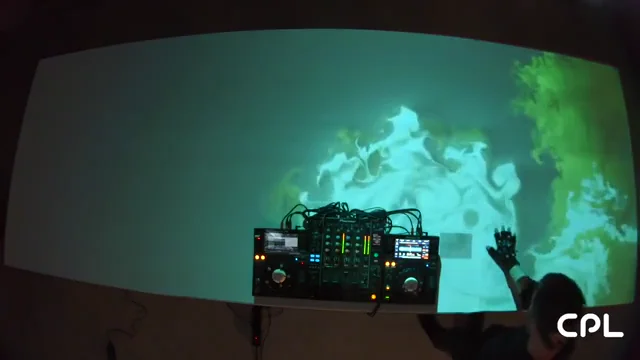
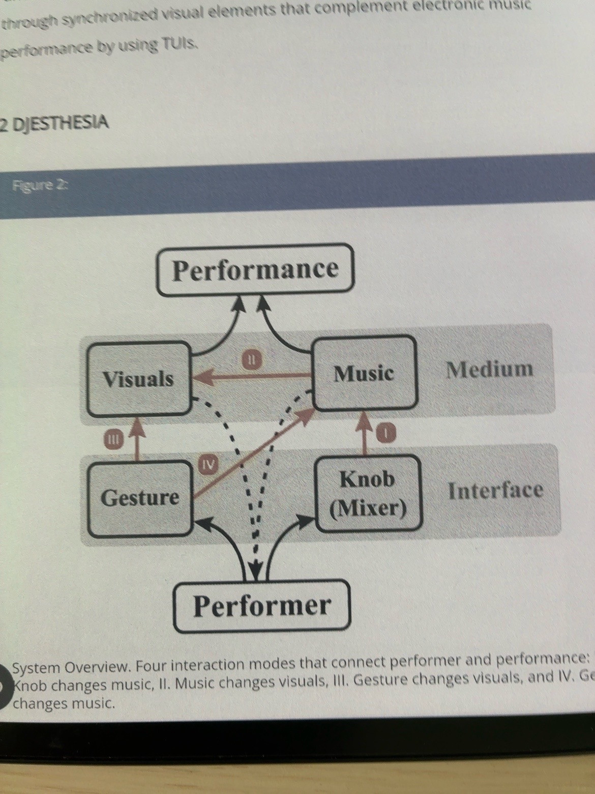
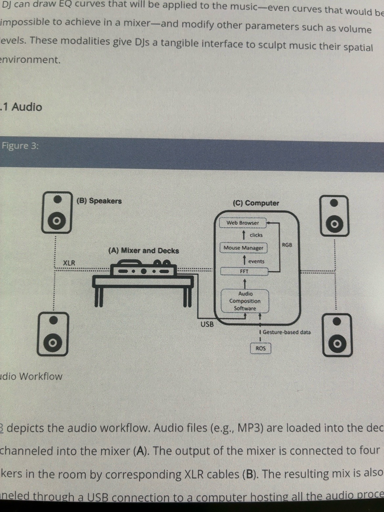
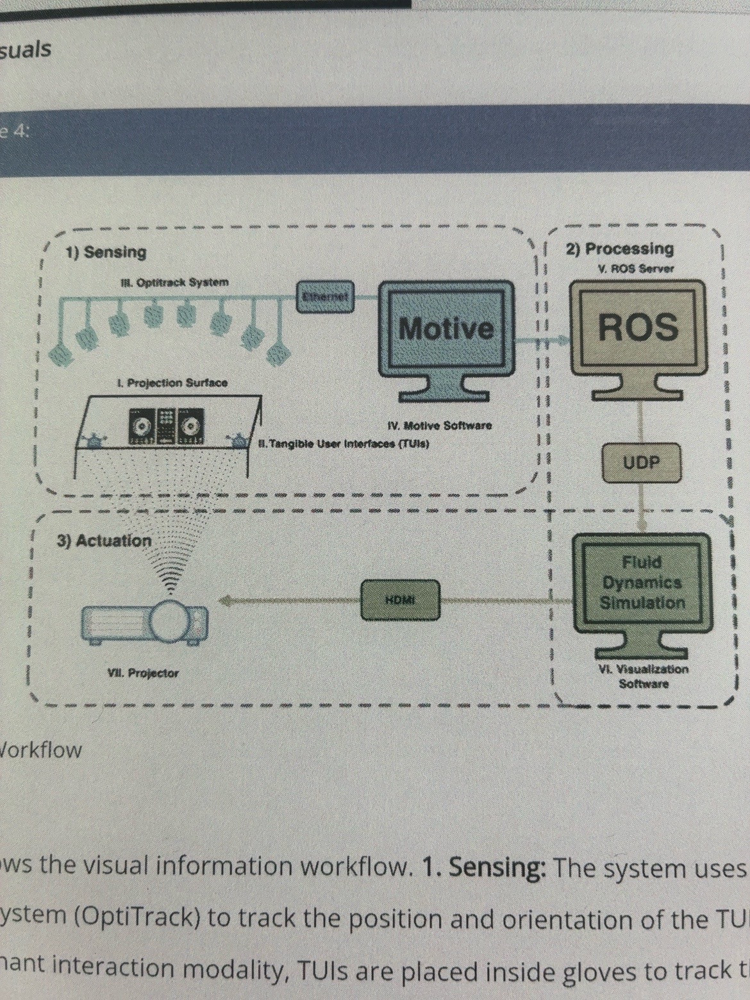

Research · Team project2025
DJESTHESIA
Tangible interaction for music and projected visuals.
Team system
- OptiTrack / Motive
- ROS
- UDP
- JavaScript / WebGL
The team demo
8-second preview
A short, muted excerpt of the team’s recorded demo. The full video is available on YouTube.
The project
DJESTHESIA is a team research project exploring tangible interaction for DJs. It connects music, hand gestures and projected visuals, allowing performers to shape an audiovisual environment through physical interaction.
My contribution
I helped test the TouchDesigner–OptiTrack interface and supported the setup. The system and code shown here are the wider team’s work; the public repository documents a WebGL visualization pipeline.
How it connects
OptiTrack and Motive supply motion-capture data. ROS and UDP carry that information to a JavaScript/WebGL fluid simulation, whose visuals are projected onto the table. The repository also includes audio analysis and a bridge from tracked gestures to audio controls.
Team implementation and documentation:GitHubOfficial project page
System diagrams
Three views of the team’s system: interaction modes, audio routing and the visual pipeline. Open a diagram to inspect its labels.

View diagram ↗Four interaction modes
I: mixer knobs change music. II: music changes visuals. III: gestures change visuals. IV: gestures change music. The diagram connects performer, interface, medium and performance.

View diagram ↗Audio workflow
Mixer and decks connect to speakers through XLR and to a computer through USB. The computer contains Audio Composition Software, FFT, Mouse Manager and Web Browser, with gesture-based data arriving from ROS.

View diagram ↗Visual information workflow
Three stages: Sensing with OptiTrack and Motive; Processing through ROS and UDP; Actuation through a fluid dynamics simulation, HDMI and a projector.